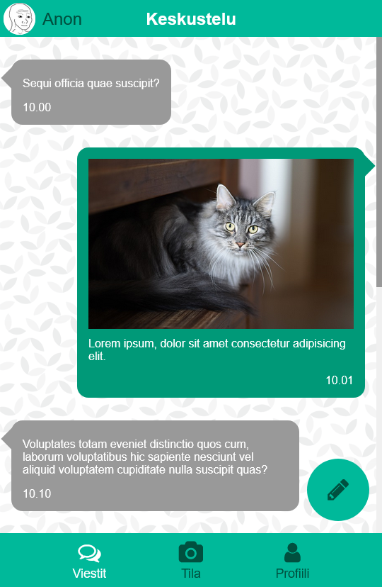

Viestisovelluksen käyttöliitymä mobiiliin
Rakenne
- Aloita tekemällä d16 kansion index.html ja style.css
- Alusta index.html-tiedosto VS-Coden tarjoamalla HTML-pohjalla ja linkitä style.css headiin
- Lisää bodyyn divi, jonka tarkoitus on rajoittaa sisällön maksimileveys
- Anna elementille esim. id container
- Lisää seuraavat elementit sen sisälle:
- Header jossa on käyttäjän kuva, span jossa nimi ja teksti jossa lukee otsikko Keskustelu
- Headerin jälkeen main elementti jolla on class chat
- Chat elementin sisälle tulee divit joissa on viestit
- Diveilllä voi olla esim. classit you / me, jolloin muiden ja käyttäjän itse lähettämä viestit voidaan muotoilla CSS:llä
- Yksittäisen viestin sisällä on p-tagi jossa varsinainen viesti lukee ja span, jossa on lähetysajankohta
- Mainin jälkeen tulee nav jolla on class mobile_nav selkeyden vuoksi
- Uusi viesti -pallukka (button) on myös navigaatiossa
- Lisää napille id write ja kuvake
- Sen jälkeen on lista ul, jossa on li listakohtia
- li listakohta sisältää i-tagin jossa on FontAwesome kuvake ja span-tagi jossa lukee linkin otsikko esim. Viestit
- Yhdellä listakohdalla voi olla class active, jota muokataan CSS:llä kertomaan käyttäjälle, millä sivulla hän parhaillaan on
- Lisää kuvakkeet FontAwesomesta
- Etsi patttern-tyylinen taustakuva esim. toptal.com

Tyylit
- Lisää neljä :root muuttujaa: pääväri, tummempi pääväri sekä käyttäjän
ja muiden henkilöiden viestiruutujen taustavärit - poista marginaalit, vaihda fontti
- aseta taustaväri ja tekstin väri
- rajoita maksimileveys esim 600px
- rajoita maksimikorkeus 100vh
- keskitä elementti sivun keskelle
- tee containerista flex
- vaihda flexin suunta column
- aseta vaalea taustaväri
- aseta yläpalkin taustaväri
- tee fontista lihavoitu
- keskitä teksti
- kasvata fontin kokoa
- lisää position: relative; jos käytyä spanissa position: absolute;
- tee headerista flex ja keskitä flex-elementit pysty ja vaakasuunnassa
- poista fontin lihavointi
- käytä position: absolute; ja vie span vasemmalta 60px päähän reunaa
- vaihda fontin väri
- käytä position: absolute; ja vie kuva melkein vasempaan reunaan
- aseta avatar-kuvan leveys ja korkeus esim. 45px
- tee kuvasta pyöreä
- aseta overflow-y: auto; jotta elementtiin ilmestyy scrolli
jos viestejä on paljon eivätkö ne mahdu kerralla ruu tuun
- lisää padding
- aseta pattern-taustakuva
- muotoile scrollbaria halutessasi
- lisää ylämarginaali
- rajoita keskustelussa lähetettyjen kuvien maksimileveys 100% (parentin leveydestä)
- käyttäjän ja toisten keskustelijoiden lähettämille viesteille yhteiset tyylit:
- rajoita viestilaatikon leveys 75% (parentin leveydestä)
- aseta ylä ja alamarginaalit
- pyöristä kulmat
- aseta clear: both; joka estää float-elementtejä menemästä vierekkäin
- aseta position: relative; jota tarvitaan seuraavaksi ::before elementtien kohdistuksessa
- muotoile toisten käyttäjien lähettämät viestit
- aseta viestilaatikolle harmaa taustaväri
- aseta float: left; jolloin laatikko on tasattu vasempaan laitaan
- aseta käyttäjän lähettämien viestien taustaväri laatikolle
- aseta float: right; jolloin laatikko on tasattu oikeaan laitaan
- .you::before, .me::before
- tee viestilaatikoista puhekuplia lisäämällä väkänen niiden ylälaitaan
- content: '';
- display: block;
- aseta taustaväri
- määritä leveys ja korkeus esim. 2em
- aseta position: absolute; joka otaa referenssikseen laatikolle asetetun position: relative;
- aseta top: 10px; jolloin väkänen on melkein viestilaatikon yläreunassa
- aseta elementti 45 asteen kulmaan
- jos elementti on tekstin päällä, niin vie se taaksepäin z-index käskyllä
- asemoi muun lähettäjän viestilaatikoiden puhekuplaväkänen vasemmalle
- left: -8px;
- asemoi käyttäjän itsensä lähettämien viestilaatikoiden puhekuplaväkänen oikealle
- right: -8px;
- tasaa lähetysajankohta oikealle käyttäjän lähettämissä viestilaatikoissa
- aseta alavalikon taustaväri
- tee navigaatiosta 100% leveä
- kasvata fontin kokoa hieman
- aseta position: relative; jolloin Kirjoita uusi viesti -pallukka
voidaan kohdistaa suhteessa alanavigaatioon - tee listasta flex
- asettele flex-elementit tasaisin välimatkoin
- poista marginaalit ja paddingit
- aseta display: inline-block;
- poista listapallukat
- aseta tekstin väri
- tee linkeistä flex elementtejä
- aseta flex suunta column, jotta kuvake on päällä ja teksti alla
- keskitä teksti
- säädä paddingit ja tee hover pseudo, jossa vaihdat väriä ja asetat kursorin sormeksi
- muuta kuvakkeiden koko sopivaksi (font-size)
- lisää tekstille ylämarginaalia jos se on kiinni kuvakkeessa
- muotoile aktiivisen linkit värit erottuvaksi
- muotoile Uusi viesti -pallukkaa
- aseta position: absolute; ja säädä top ja right arvot siten että pallukka on alanavigaation yllä oikeassa laidassa
- aseta z-index siten että pallukka on päällimmäisenä
- kasvata fontin kokoa
- aseta pallukan korkeus ja leveys
- tee pallukasta pallukka pyöristämällä kulmat
- poista reunaviiva
- aseta taustaväri ja tekstin väri
- tee hover-pseudo jossa muutat kuvakkeen ja pallukan väriä
- muotoile scroll-bar jos jää aikaa
- tallenna GitHubiin
body
#container
header
header span
header img
.chat
.chat p
.chat img
.you, .me
.you
.me
.you::before
.me::before
.me span
.mobile_nav
.mobile_nav ul
.mobile_nav ul li
.mobile_nav ul li a…
.mobile_nav ul li i
.mobile_nav ul li span
.active a
#write